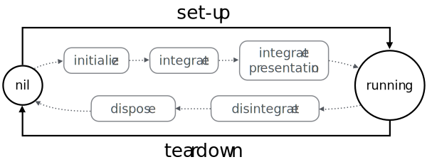

co.ISysteminterface
Façade to the whole system. Controls the system’s life cycle.
The Coral system coordinates the dynamic set of modules, types and services that compose a program at runtime.
A program in Coral is a runtime composition of modules, types and services subject to the system’s life cycle.
The system’s life cycle starts with a nil state, as shown in the diagram below. From nil, the set-up process sets the system up and running by initializing and integrating modules. When the program is over, the teardown process resets the system to nil by disintegrating and disposing all modules. The grayed boxes in the center correspond to the module events that are triggered during a set-up/teardown cycle. 
The co.ISystem service is Coral’s only singleton. See the documentation on how to obtain it in C++ or another language.
Hierarchy
- co.IServiceBase of all interfaces. Represents a service provided by an object.
- co.ISystemFaçade to the whole system. Controls the system’s life cycle.
Fields
Façade to the module system, with methods to find and load modules.
A global database where services are published and queried.
The system’s current life-cycle state. See co.SystemState.
Façade to the type system, with methods to find, load and create types.
Methods
void setupBase(in string[] requiredModules)
Loads all requiredModules (if any) and integrates the system.
Must be called when the system’s state is SystemState_None. This method changes state to SystemState_Integrated on success, or back to SystemState_None on exceptions.
- co.IllegalStateException if state isn’t SystemState_None.
- co.ModuleLoadException if loading one of the
requiredModulesfails.
void setupPresentation()
Integrates the presentation layer and sets the system running.
Must be called after setupBase. The system’s state changes to SystemState_Running on success.
void tearDown()
Disintegrates and disposes all modules.
Must be called while the system is running. This resets the system’s state to SystemState_None.
- co.IllegalStateException if state isn’t SystemState_Running.
Embedded C++
// Sets the system up and running without loading any modules. inline void setup() { setup( Slice<std::string>() ); } // Sets the system up and running with the specified modules. inline void setup( Slice<std::string> requiredModules ) { setupBase( requiredModules ); setupPresentation(); }